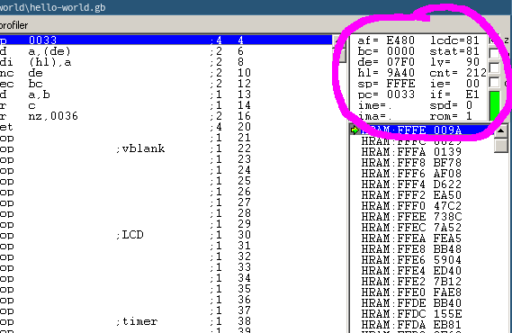

レジスター
さて、ビットが何であるかがわかったところで、ビットがどのように使われているかを説明しましょう。 心配しないでください、これはほとんど次のセクションのための準備作業で、最後に！コード👀を見ます。
まず、BGBを開くと、ゲームボーイの画面だけが出てきました。 そこで、デバッガーを開いてみましょう！画面を右クリックして「その他」を選択し、「デバッガー」をクリックします。 あ、ついでに画面サイズを少し大きくしておきましょうか。
デバッガは最初とっつきにくいかもしれませんが、すぐに使いこなせます！今は、右上の小さなボックス、レジスタビューアに注目しましょう。

⚠️
レジスタビューアには、CPUレジスタといくつかのハードウェアレジスタが表示されます。 このレッスンでは、CPUレジスタのみを扱うので、ここではこれらのエントリのいくつかを無視することにします。
CPUレジとは？ たとえば、ケーキを作るとき、「チョコレート125gとバター125gを溶かし、卵2個と混ぜる」などのレシピを見ながら、必要に応じて冷蔵庫から材料を取り出しますが、冷蔵庫の中で調理するわけではなく、小さなワークスペースが用意されています。
Registers are pretty much the CPU’s workspace. They are small, tiny chunks of memory embedded directly in the CPU (only 10 bytes for the Game Boy’s CPU, and even modern CPUs have less than a kilobyte if you don’t count SIMD registers). Operations are not performed directly on data stored in memory, which would be equivalent to breaking eggs directly inside our fridge, but they are performed on registers.
ℹ️
There are exceptions to this rule, like many other “rules” I will give in this tutorial; I will paper over them to keep the mental complexity reasonable, but don’t treat my word as gospel either.
General-purpose registers
CPU registers can be placed into two categories: general-purpose and special-purpose. A “general-purpose” register (GPR for short) can be used for storing arbitrary integer numbers. Some GPRs are special nonetheless, as we will see later; but the distinction is “can I store arbitrary integers in it?”.
I won’t introduce special-purpose registers quite yet, as their purpose wouldn’t make sense yet. Rather, they will be discussed as the relevant concepts are introduced.
The Game Boy CPU has seven 8-bit GPRs: a, b, c, d, e, h, and l.
“8-bit” means that, well, they store 8 bits.
Thus, they can store integers from 0 to 255 (%1111_1111 aka $FF).
a is the accumulator, and we will see later that it can be used in special ways.
A special feature is that these registers, besides a, are paired up, and the pairs can be treated as the 16-bit registers bc, de, and hl.
The pairs are not separate from the individual registers; for example, if d contains 192 ($C0) and e contains 222 ($DE), then de contains 49374 ($C0DE) = 192 × 256 + 222.
The other pairs work similarly.
Modifying de actually modifies both d and e at the same time, and modifying either individually also affects the pair.
How do we modify registers?
Let’s see how, with our first assembly instructions!